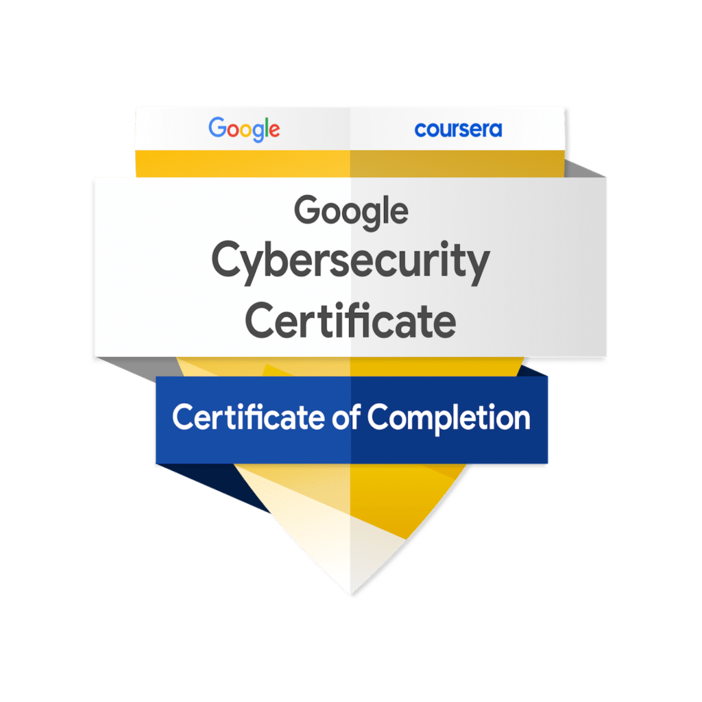

About me
I'm studying Cybersecurity at The University of Texas at Dallas. I recently interned at Lawrence Livermore National Lab and I'm very passionate about cybersecurity. I'm also a competitive CTF player and was a private tutor for Java programming for four years. I graduate in May and am excited to move into a full-time role. Lastly, my hobbies are games and photography!
Education
University of Texas at Dallas - Richardson, TX
M.S. Computer Science - Expected Graduation - May 2025
- Cybersecurity Concentration Track
- GPA: 3.90
- NSF CyberCorps: Scholarship for Service Recipient
- Dean's List Recipient
- Coursework: Systems Security, Language-Based Security, Network Security, Information Security
B.S. Computer Science - May 2023
- Cum Laude - GPA: 3.83
- Dean's List Recipient, Academic Excellence Scholarship Recipient
- Coursework: Operating Systems, Functional Programming, Automata Theory, Machine Learning, AI
 |
CompTIASecurity+ Certification - April 2024 |
|  |
Cybersecurity Certificate - September 2024 |
Experience
Graduate Intern - Lawrence Livermore National Laboratory
- Reverse engineered programmable logic controller in a team environment using BinSync to enhance security
- Successfully identified vulnerability for PLC and built PoC for demonstrating vulnerability's impact
- Performed static and dynamic program analysis using REMnux on a separated VM network to detect vulnerabilities
- Presented comprehensive findings to a group of 80, including key decision-makers, to inform future initiatives
Cybersecurity Researcher - UTD Software and Systems Security Lab
- Integrated a vulnerability scanning application into drone simulation software, proving implementation capabilities
- Utilized multiple data points from the scan to initiate a vulnerability test, identifying potential threats
Private Java Tutoring - Wyzant
- Tutored dozens of students in a remote capacity totaling to ~400 hours of instruction
- Formulated lesson plans for topics such as algorithms, software design, and API implementation
Projects
Cybersecurity Home Lab
- Designed and implemented a home lab network with a custom-built server, network devices, and security solutions
- Deployed a unified threat management (UTM) appliance, Intrusion Prevention System (IPS), Virtual Local Area Networks (VLANs), and a Honeypot for enhanced network security
- Implemented and monitored Security Information and Event Management (SIEM) Wazuh for threat detection
Cryptographic Protocol Verification
- Conducted formal analysis and verification of BACnet to assess the security properties it is designed to provide
- Utilized formal verification tool CPSA to verify security promises under the Dolev-Yao model
Secure Bluetooth Android Application
- Designed and developed a multi-threaded back end in Java/XML for tracking student attendance in the classroom
- Mentored and led a team of five developers, resulting in a MVP application release and subsequent implementation
Activities
CTF Competitions
- UTD CTF Team - Top 11% USA
- CSAW CTF 2024
- Toyota Hackfesta CTF
- Deadface CTF
- Cake CTF
- DEFCON 2024 Attendee
Other Cyber Activities
- PWN College
- TryHackMe - Completing Cyber paths
Boy Scouts of America
- Eagle Scout - 400+ hours of community service in a multitude of outlets including direct and indirect support of charity organizations.
- Order of the Arrow Vigil member - Elected by peers to be honored for years of service to local lodge and council
- James E West Fellow - Order of the Arrow lodge service organization donated $1000 to local Boy Scout council in my name
Languages
- English - Fluent
- Japanese - Conversational, basic reading and writing
- Korean - Basic, reading and writing